A first-person co-op horror game for 1-4 players. Explore six abandoned buildings in the town of Halloway, solve the puzzles that turn their lights back on, and get away from the thing hunting you in the dark. Play online, in splitscreen, or alone.
Fact sheet
- Title
- The Halloway Haunting
- Genre
- First-person co-op horror
- Players
- 1–4: online co-op, local split-screen, or solo
- Platforms
- Windows, macOS, Linux (Steam)
- Developer
- New Bones Studios
- Engine
- Godot
- Input
- Keyboard and mouse or controller, mixed freely in split-screen
- Release date
- Q4 2026
- Price
- $6.99
- Press contact
- info@newbonesstudios.com
- Steam page
- The Halloway Haunting on Steam
- Demo
- Free on Steam now
About the game
Every building in Halloway has lost its power and gained a tenant. Each one is a self-contained level with its own way out, and none of them can be finished quickly or quietly. Players search for keys, fuses, and clues, restart generators, and work through each building's puzzle chain while the Wraith walks the halls looking for them.
The game is built to work at every party size. A solo player can finish every level, and a group of four can split up to move faster, at the cost of being alone when the Wraith arrives.
Key features
- Co-op three ways. Play online with up to four players, in split-screen on one machine, or alone. Every level can be finished at any party size.
- Six buildings, six different ways out. Each level has its own layout, puzzle chain, and ending rather than a shared checklist.
- Light is the objective. The puzzles in each building lead to getting its power back on, and the dark is where the Wraith hunts.
- A different deal every run. Keys, fuses, and clues are dealt to new places each session, so knowing the building does not mean knowing the answer.
- What you carry matters. A player who is caught drops what they were holding, and someone else has to go back for it.
- Challenges and unlocks. Finishing buildings and their optional challenges earns points toward new player outfits and new looks for the monster.
- Secrets. Each building hides something for players who look past the main route.
The six buildings of Halloway
| Police Station | A dark precinct with a locked cell block, a dead generator, and woods pressing in behind it. This is the level in the demo. |
|---|---|
| Meridian Bay | An aquarium whose four exhibits have lost life support, with a glass tunnel under the bay as the only way out. |
| St. Aldwyn's | A hospital with four dead wings, a mortuary in the basement, and a rescue beacon on the roof. |
| Halloway Fuel | A roadside gas station at three in the morning, with your own car wrecked in the lot and a cellar that goes further down than it should. |
| The Cabin | A small island at night: a log cabin, a burial ground behind it, and a boat locked in a shed on the hill. |
| The Allen-Mercur House | A Victorian mansion with gardens, a tower, and a parlor where the last séance never properly ended. |
The demo
A free demo is live on Steam for Windows, macOS, and Linux: The Halloway Haunting Demo.
It contains one complete building, the Police Station, from the first locked door to the escape. It supports the same solo, split-screen, and online play as the full game, so you can try it alone or bring up to three others. Demo players match with other demo players.
The objects the level depends on are dealt to new places each session, so a second run does not play like the first.
Trailer
Screenshots
All images are in-game captures at 1920×1080 and may be used in coverage. Click any image for the full-size file, or get them all in the press kit download.

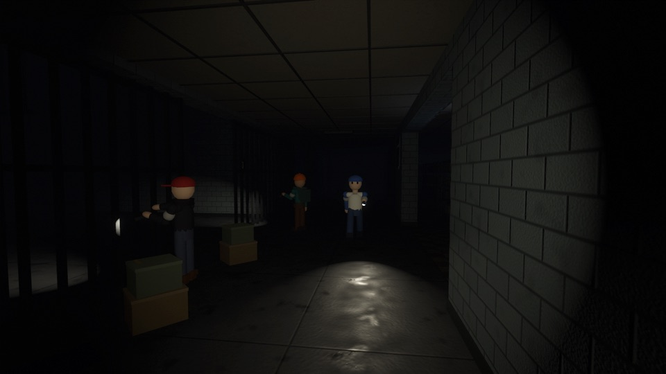

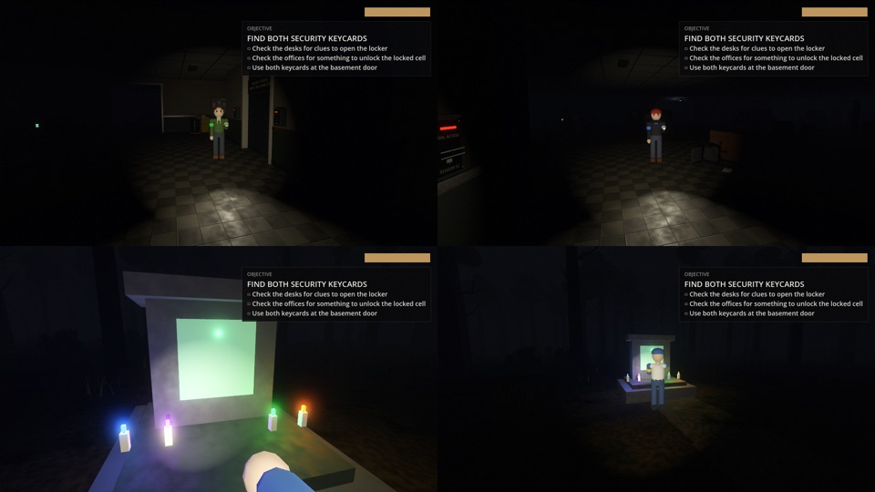

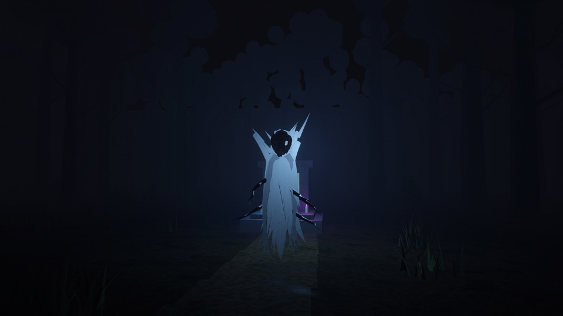

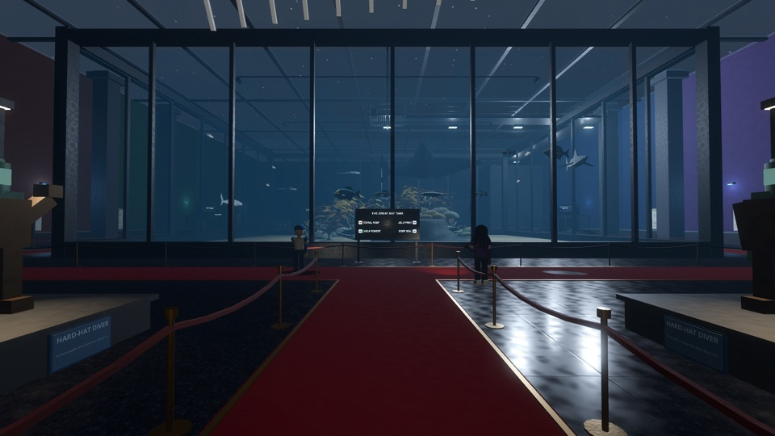

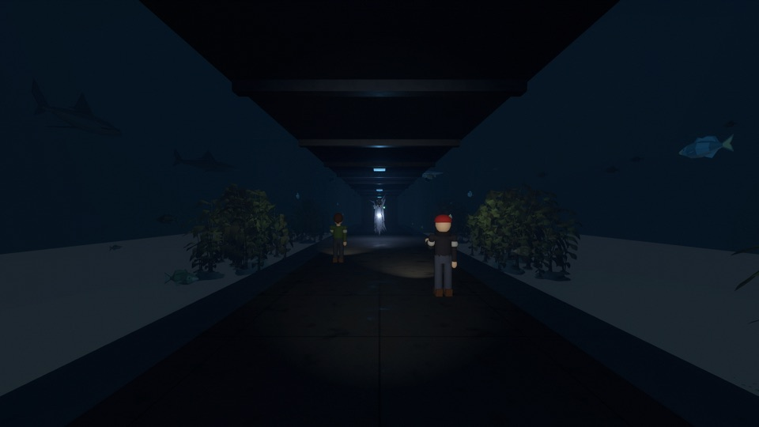

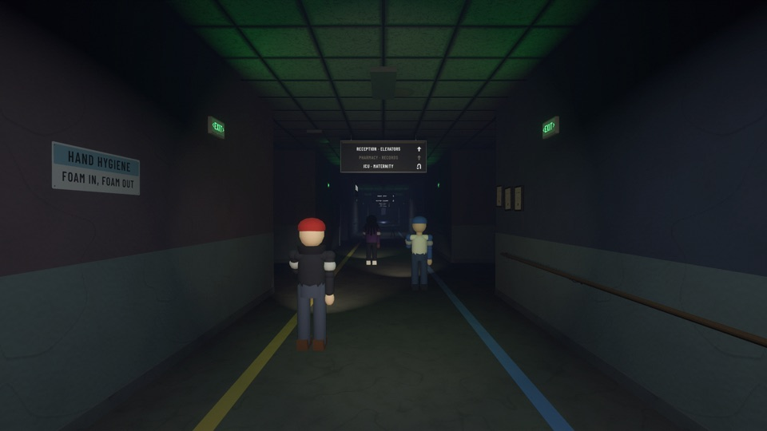

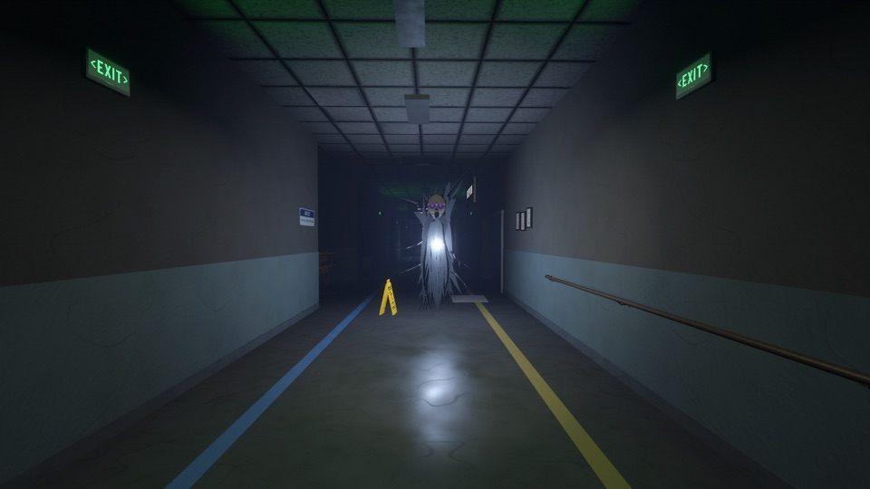

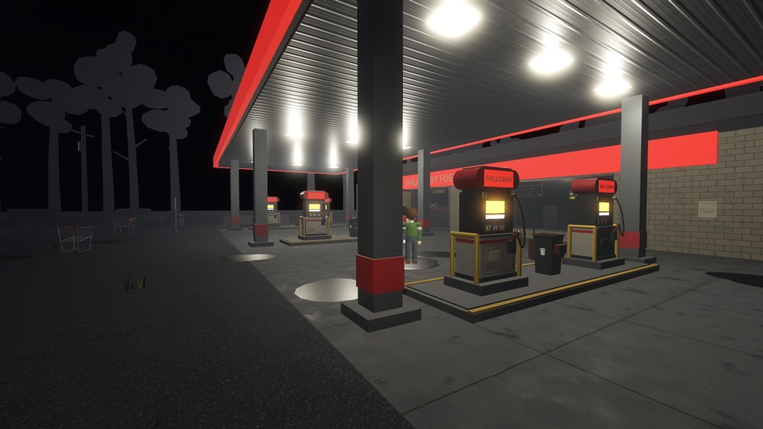

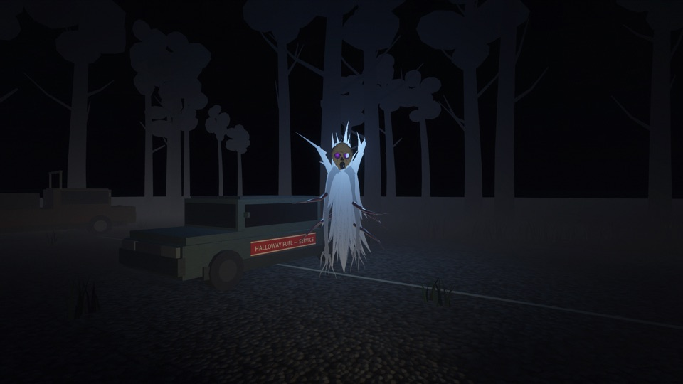

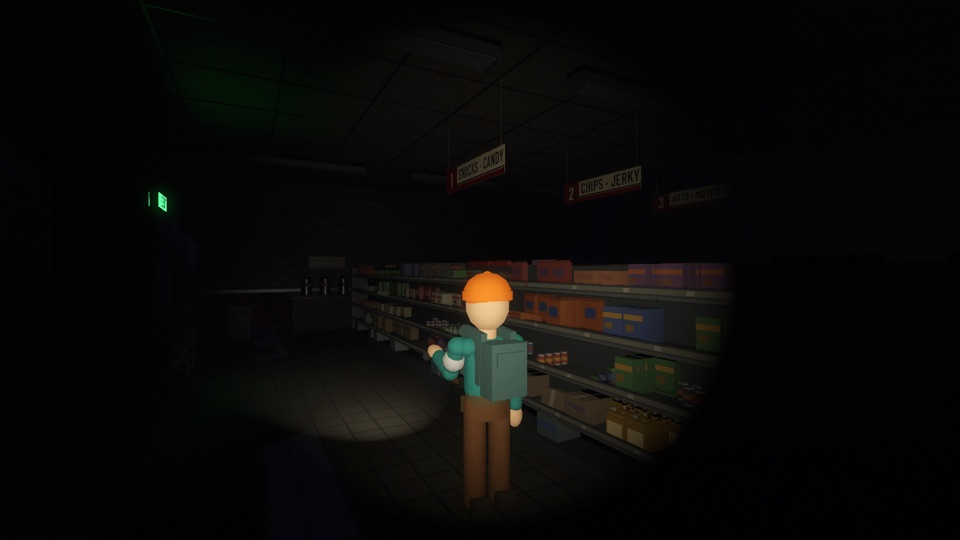

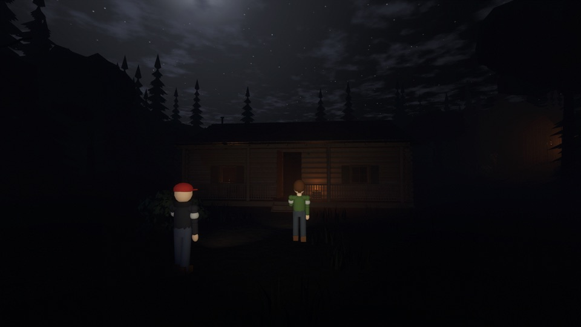

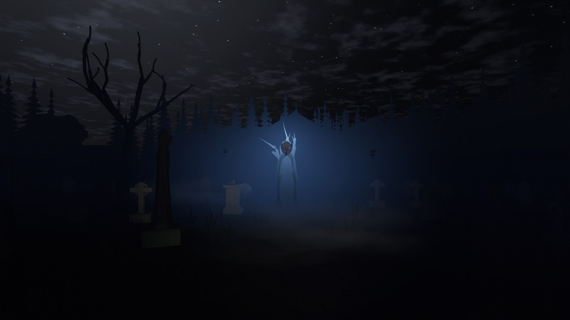

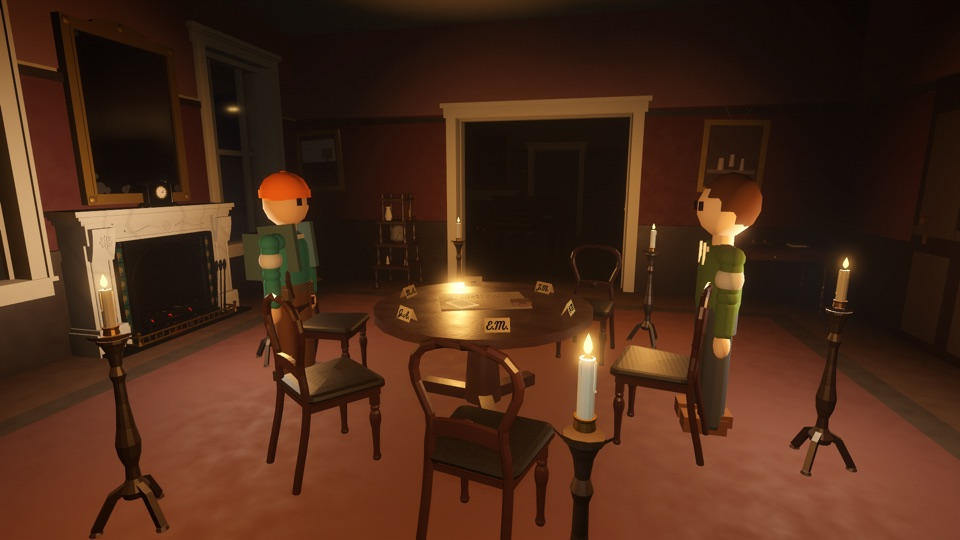

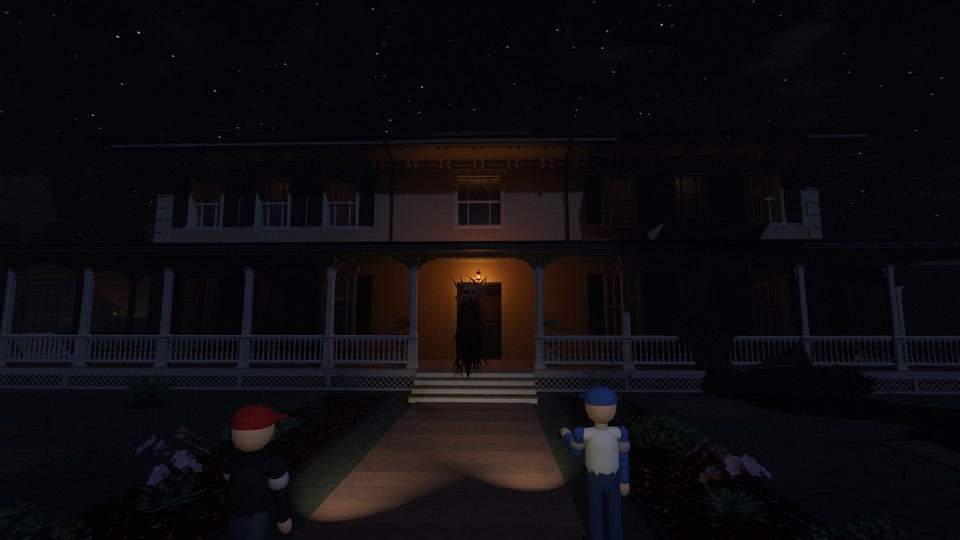

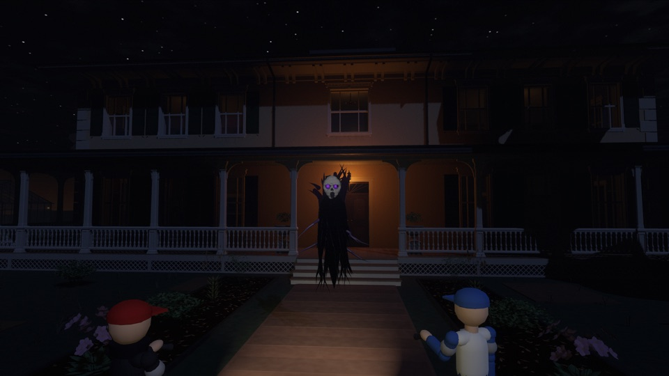
Logo and key art

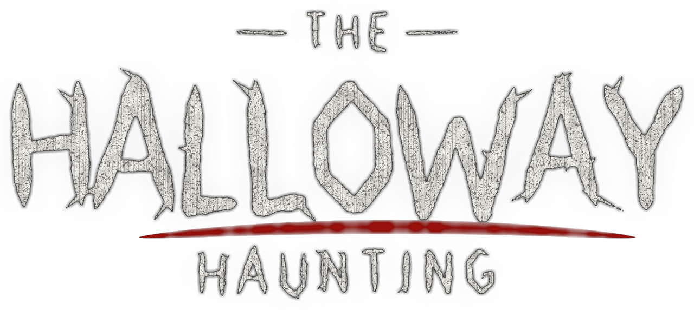

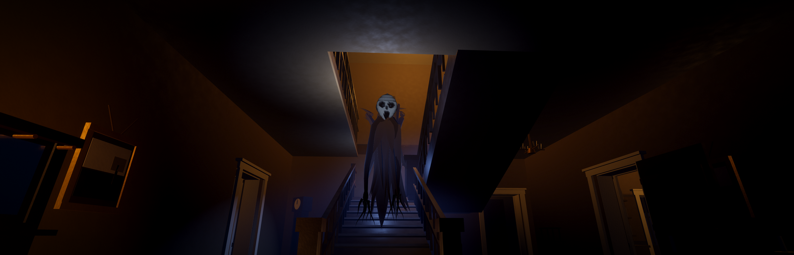


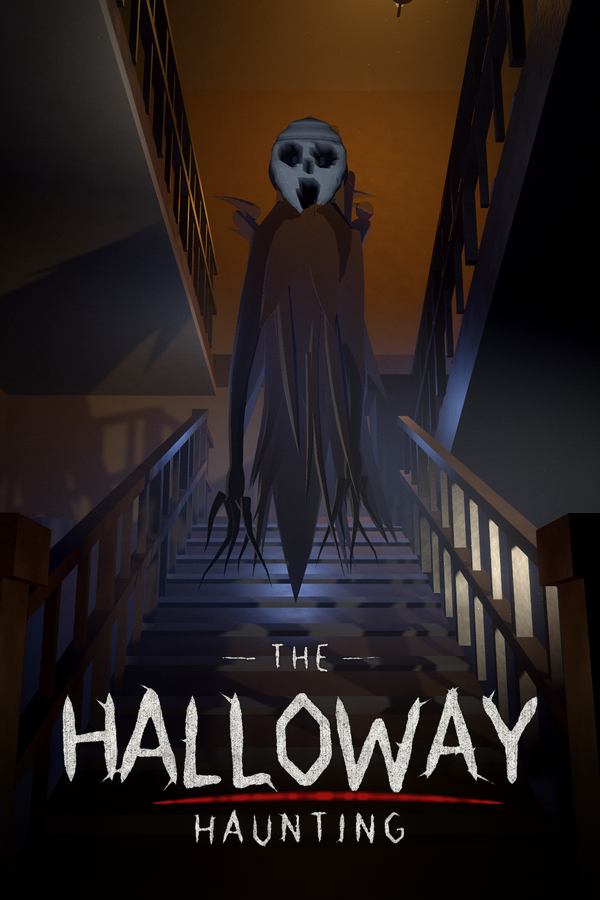
About the developer
The Halloway Haunting is made by New Bones Studios, an independent studio, in the Godot engine.
Contact
For review access to the full game, interviews, or more assets, email info@newbonesstudios.com.